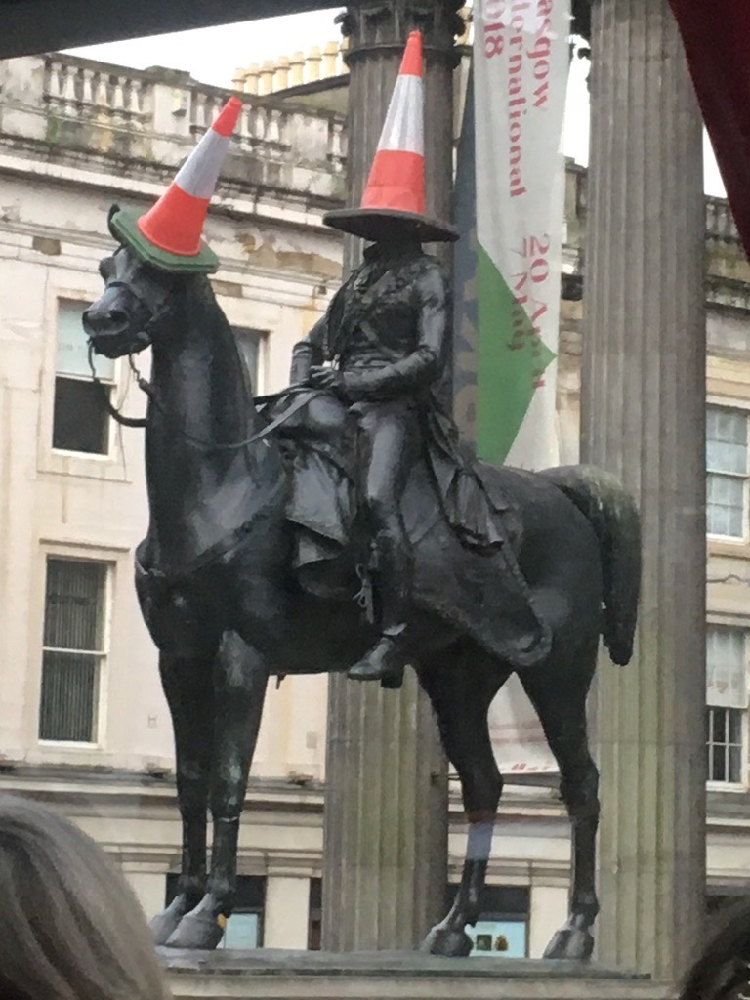
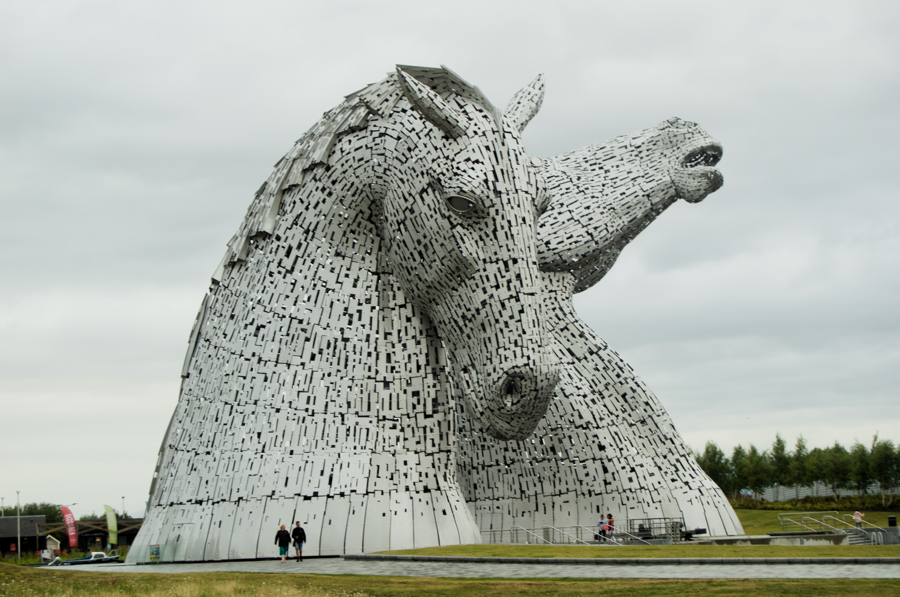
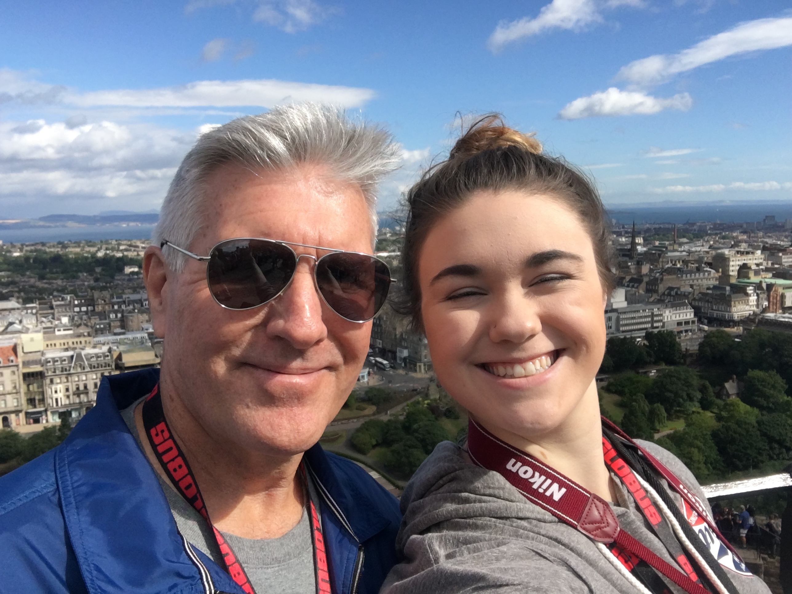
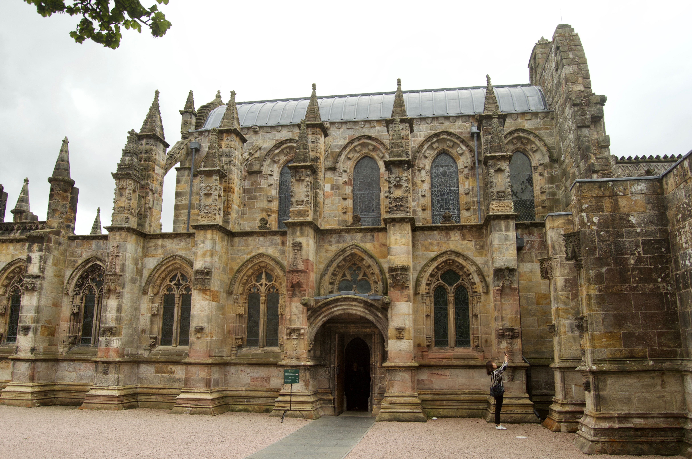
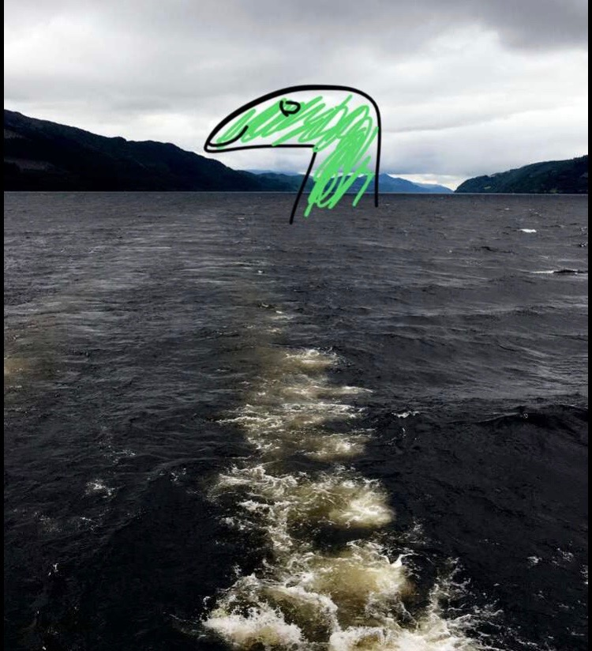
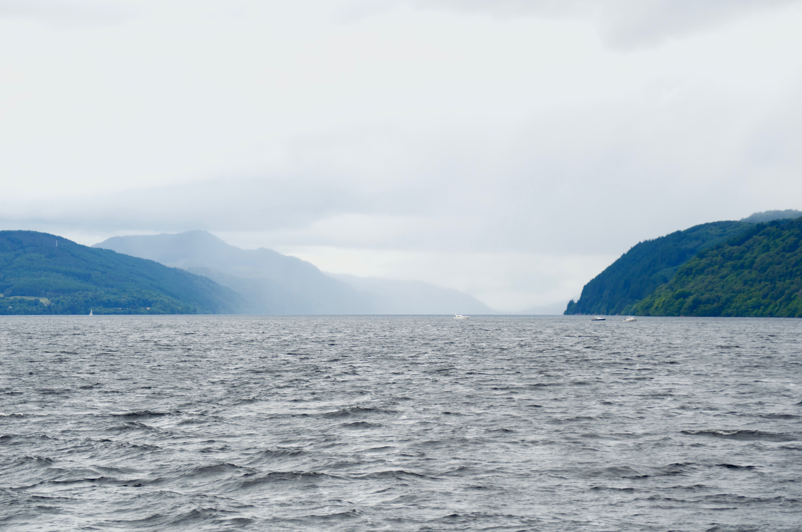
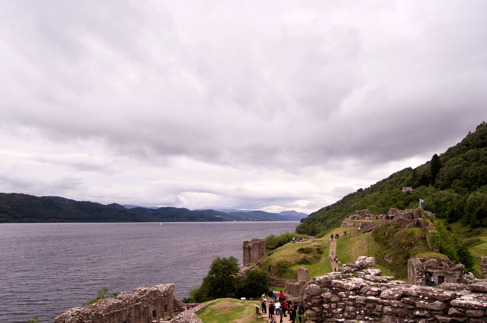
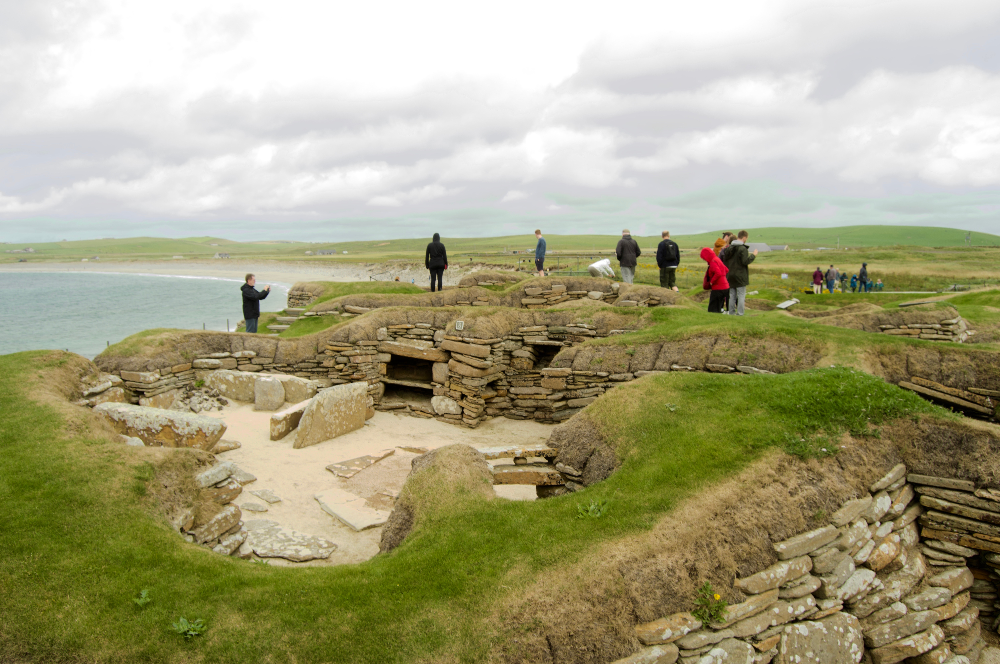
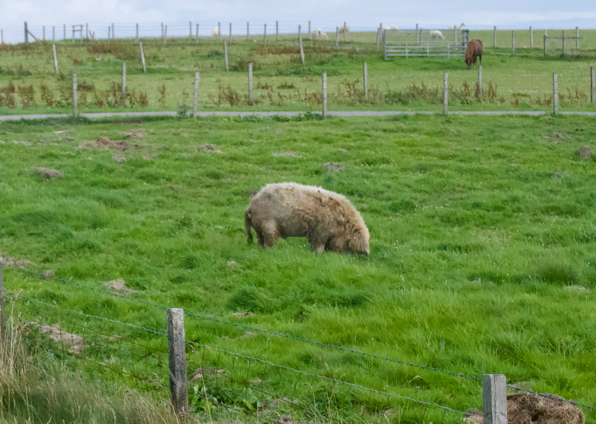
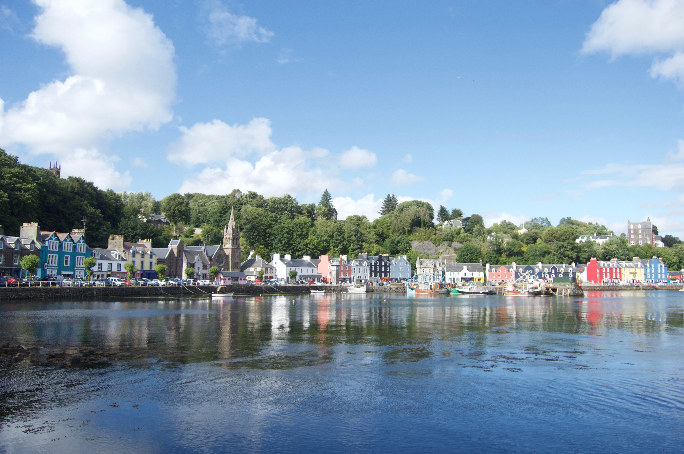

My Scottish Highland Trip
In July 2018, my parents and I spent two weeks traveling through the Scottish Highlands. We started and ended in Glasgow and followed the coast up and down the edges of Scotland. I picked a few points scattered across the country to show for my map.
Glasgow
All of the locations I've chosen aren't completely random, they're places that I remember from my trip. This spot is in front of the Gallery of Modern Art because of the statue in front of it. This statue actually always looks like it does below and the cones are always being taken down by polic and being put back up by anyone in Glasgow with a few spare cones at their house.
Wellington Monument, known for always having a cone or two.

Doune Castle, known as a medieval stronghold in 1420 and Camelot in Monty Python and the Holy Grail. The castle is actually in Doune Village, northeast of Glasgow.
The Kelpies are the largest equine statues in the world, located in Falkirk, northeast of Glasgow.
Edinburgh
This was my second time in Edinburgh but I enjoyed it more than the first. We spent longer here and got to enjoy the city a bit more. The photo below is of me and my dad in front of the city at the edge of the castle along with some other photos.
My dad and I above Edinburgh at the city's castle while being blinded by the sun.

The view from the castle.
Rosslyn Chapel, made famous in Da Vinci Code.
Loch Ness and Urquhart Castle
Visiting Loch Ness has been a dream of mine since I was little and I was so excited to be able to cross this off my list of things to see. The photos below are more pictures I took along with a Snapchat I got from my friend who drew in Nessie.
Here's that Snapchat picture of Nessie I mentioned.
An actual picture of the southern end of Loch Ness.
The same view of the loch from Urquhart Castle.
The Orkneys
We spent a day on our trip traveling to the Orkney Islands. We set off from John O'Groats and visited a brewery, Skara Brae, and saw Hungarian Wooly Pigs.

The famous John O'Groats sign with different world locations and lots of stickers.

The Ring of Brodgar, aka Orkneys' Stonehenge.
Skara Brae, a 5,000 year old Neolithic Village.
Hungarian Wooly Pig!
Isle of Skye
Skye is known for being one of the most beautiful places in the world. The only issue was how foggy it was, restricting us from seeing its famous rock formation. But we did get to see our first Highland Cows.
The main city of Portree.

A taste of some Isle of Skye scenery.

Scottish Highland cow, known locally as 'Heelin Coos'.